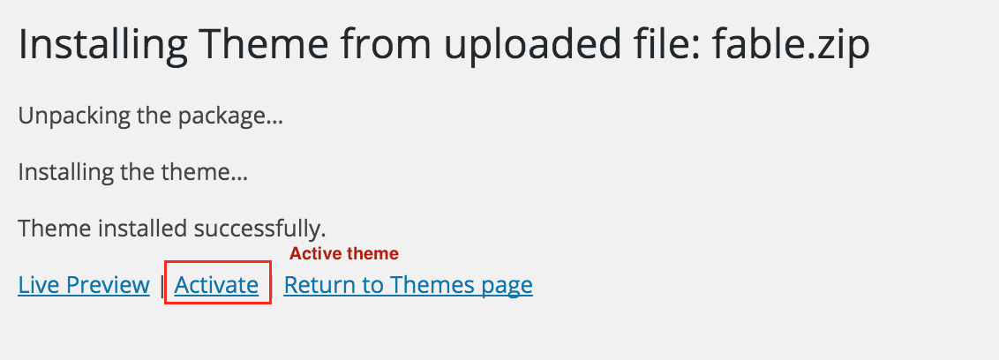

Install and Config Fable Theme
Version 1.1
- created: 07/09/2015
- latest update: 06/28/2016
- by: Ovatheme
- email: ovatheme@gmail.com
Overview
Support
Note: If you contact us directed at ovatheme@gmail.com, please attach info about purchase code:
Then open file and find "Item Purchase Code" like
Item Purchase Code: cdf581e0-ed42-41a2-ab3f-26bb5fb9c874
General info
WordPress Information
To install this theme you must have a working version of WordPress already installed.
To install this theme you must have a working version of WordPress already installed. If you need help installing WordPress, follow the instructions in WordPress Codex or you can watch the Instructional Video. Below are all the useful links for WordPress information.
- WordPress Codex – general info about WordPress and how to install on your server
- Instructional Video – How To install wordpress
- First Steps With WordPress – general information that covers a wide variety of topics
- FAQ New To WordPress – the most popular FAQ’s regarding WordPress
- WP101 Basix Training videos – some great videos from WPTuts on WordPress
Requirements For Our Theme
To use theme, you must be running WordPress 4.0 or higher, PHP5 or higher, and mysql 5 or higher. We have tested it with Mac, Windows and Linux. Below are a list of items you should ensure your host can comply with.
- Check to ensure that your web host has the minimum requirements to run WordPress.
- Always make sure they are running the latest version of WordPress
- You can download the latest release of WordPress from official WordPress website
- Always create secure passwords FTP and Database
How to use this documentation
How to install theme:
1: Read "installing the theme" section
2: Read "Config in page" section
3: Read "Customizer" in theme
4: Read custom post type
5: Read config in extra plugins: contact form 7, mailchimp
6: Read "Translations" section: Translate text in theme
Installing the Theme
Once you have setup a copy of WordPress, there are two ways you can go about installing the theme:
- Install via Wordpress
- Install via FTP
Install via Wordpress
For example: Install theme fable.zip
Step 1 - Unzip the downloaded package from Themeforest. Find the folder theme and inside it find the file fable.zip
Step 2 - Login to your WordPress dashboard, go to Appearance > Themes >> Click "Add New" >> Click "Upload theme"

Step 3 - Click "Choose file" and find the file "fable.zip" on your computer. Click "Install Now"
Step 4 - Activate the theme: Go to Appearance > Themes and Activate.

Step 5: Install Plugins
{kind=link}
Step 6: Import demo Data
Go to the WordPress Admin > Tools > Import and click WordPress as displayed in image below.

At 1st time you need to install WordPress importer plugin

Once installed you need to activate the plugin and run the importer.

Select the fable_wordpress.xml file from sample_data folder in downloaded package that you have downloaded from themeforest.


{kind=link}
Step 8: Install Revolution slider
{kind=link}
{kind=link}

Step 9: Setup Home page
From Left bar >> Settings >> Reading
Step 10: Setup Menu
Step 11: Install Child-theme
{kind=link}
{kind=link}
{kind=link}
Install via FTP
|
Step 1 - Please surely 'transfer type' in your FTP is 'Binary' Step 2 - Upload fable folder from downloaded package into wp-content > themes folder Step 3 - Read step 4,5,6,7,8,9,10 in "install via wordpress" section |
|
How to update the theme
- Step 1: Backup all files of theme
- Step 2: Open changelog/index.html file in download package
{kind=link}
- Step 3: Upload changed files via FTP software
Config in Page
Theme Option - Customizer
- You can use some option for theme in: Appearance >> Customize
- Global settings
+ Display spin
+ Main layout
+ Width of site
+ Seo keywords, Description
- Typography settings
+ Main color
+ Body font
+ Title font
+ Comic_font
+ Button hover color
- Logo settings
+ upload logo
- Menu settings
+ Social footer
+ Menu Background Color
+ Opacity of Background Color
+ Menu Background Color when page scroll
+ Opacity of Menu Background Color when page scroll
+ Menu Link Color
+ Menu Link Color when hover
+ Menu Link Color when active
+ Menu Link Color when page scroll
+ Show header background for search
Home page
Go to Pages >> All pages from left sidebar >> Choose Home bakery, Home cafe, Home pub, Home restaurant to edit . You need to know visual composer to use element.
{kind=link}
Slideshow
Click Slider Revolution from left sidebar >> Choose a slide to edit.
You can read more here to know how to use revolution slider: https://revolution.themepunch.com/
{kind=link}
{kind=link}
Visual Composer
OverView
You can read detail here: http://vc.wpbakery.com/
Note: If you want to auto update Visual Composer, you have to purchase "Regular License" at codecanyon (http://codecanyon.net/item/visual-composer-page-builder-for-wordpress/242431) then update info in settings of Visual Composer:
Plugins
1: Booking Form
From Left Bar >> Contact >> Contact From >> Form tab and insert this code
{kind=link}
2: Contact form 7
From Left Bar >> Contact >> Contact From >> Form tab and insert this code
{kind=link}
Translations
The theme is compatible with WPML plugin, thus can be translated into multiple languages. Follow this link for guide. You can also use POEdit plugin for translation.
- Located the .po file in folder /languages.
- Open the file with POEdit and translate the texts into your preferred language.
- When complete, you’ll want to save the file twice, as two separate files – a .po file and a .mo file. When you save the files, you must name them according to your language code. Find a list of language codes at WordPress in your Language. As an example, the language code for English is en_EN, so you would save the translated files as en_EN.po first, then en_EN.mo.
- When that’s done, simply upload the files to your theme folder.
Codestyling Localization is a good alternative for POEdit. It also works with .po/.mo files and is very easy to use.